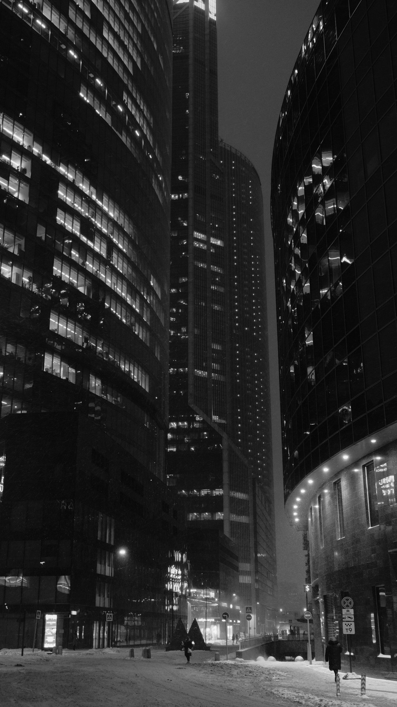
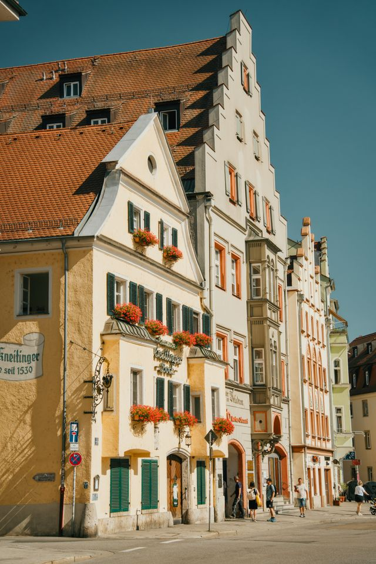
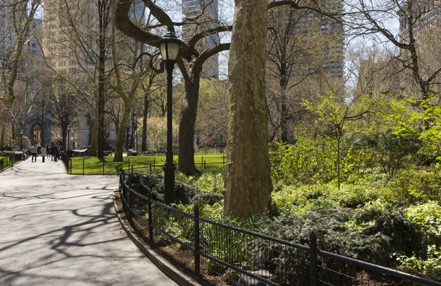

Lugares de interés
Recorre el imponente Castillo de Escarcha, admira el Mirador de Cristal con sus vistas panorámicas al valle y paseá por los Jardines de Invierno, protegidos por cúpulas térmicas.

Bienvenidos a nuestra web oficial.
Descubrí los rincones mágicos de Invernalia, donde la arquitectura gótica se funde con paisajes montañosos de ensueño. Cada esquina de la ciudad ofrece una postal inolvidable lista para ser fotografiada.
Recorre el imponente Castillo de Escarcha, admira el Mirador de Cristal con sus vistas panorámicas al valle y paseá por los Jardines de Invierno, protegidos por cúpulas térmicas.

La agenda cultural de Invernalia vibra durante todo el año con festivales de luz y esculturas de hielo que atraen a artistas de todo el mundo. Podés disfrutar de conciertos de música clásica, visitar sus galerías de arte contemporáneo o participar en los talleres artesanales de soplado de vidrio. Aquí, la creatividad y las tradiciones se celebran en cada temporada.


El corazón de la ciudad, un amplio espacio empedrado rodeado de cafés con calefacción al aire libre y edificios históricos. Es el punto de encuentro perfecto para relajarse, probar la pastelería local y contemplar la vida urbana.